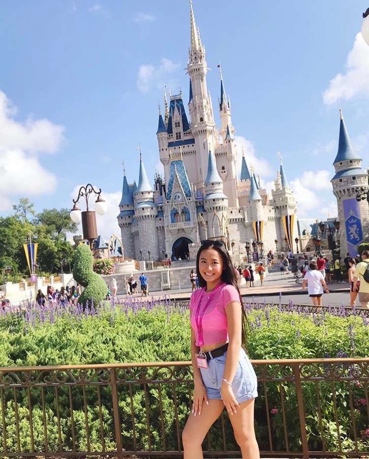
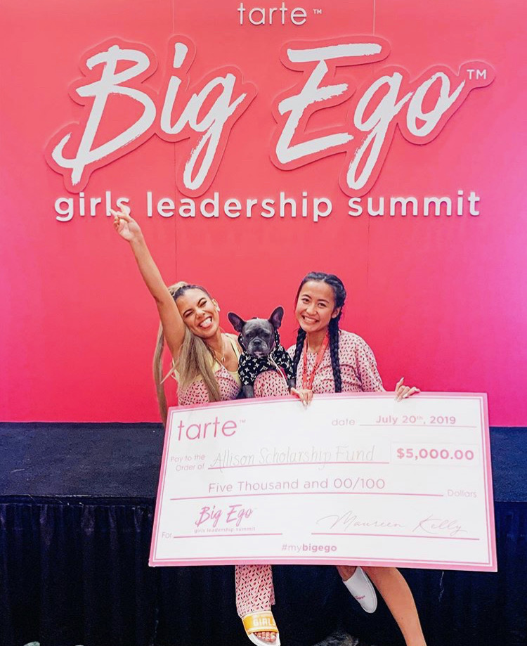
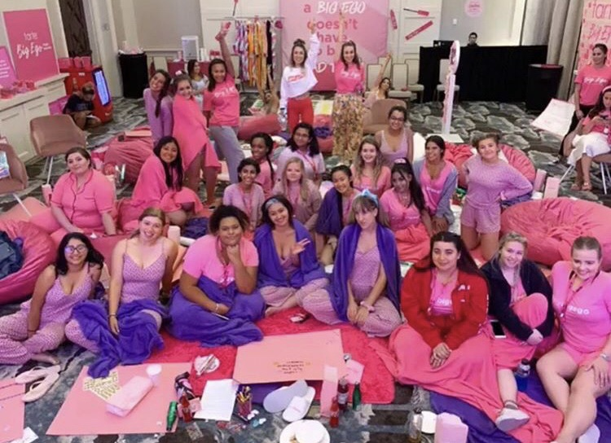
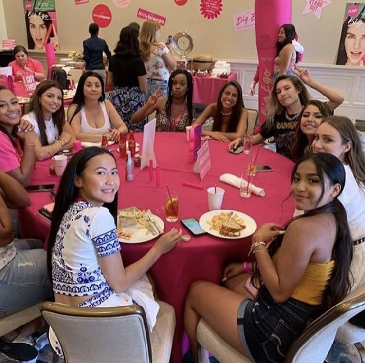
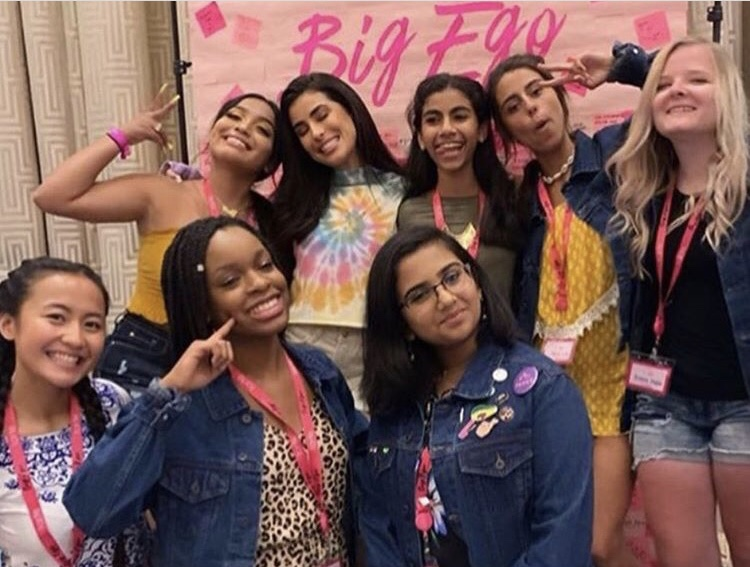

Allison Vang was the inspiration of our appearance at the Artemis Project. We want to thank Allison and recognize her for always being positive and motivating others.

trinity ~ my mom already knew about the program.
jovina ~ allison told me about this program over very long texts. she was very excited to introduce this program to us and was very happy to hear that we got in.
Without Allison jovina would've never heard about this program or have the opportunity to join this program. Allison is a very special person. She is very smart, beautiful, and is never the person to have second thoughts about good opportunities. Allison is someone we can both look up to and would never be dissapointed. We are very proud of her accomplishments in women empowerment. She has always been very confident and interested in women's rights.
Allison was chosen to atttend the Big Ego Leadership Summit in Orlando, Florida this past weekend. She was chosen out of over 5,000 applicants by Adelaine Morin (a famous Youtuber) and received a five-thousand-dollar scholarship for her leadership. Allison had the opportunity to meet famous influencers and other girls who also have a stand in women empowerment. The whole event was hosted by Tarte Cosmetics. We are so proud of her many acccomplishments.



